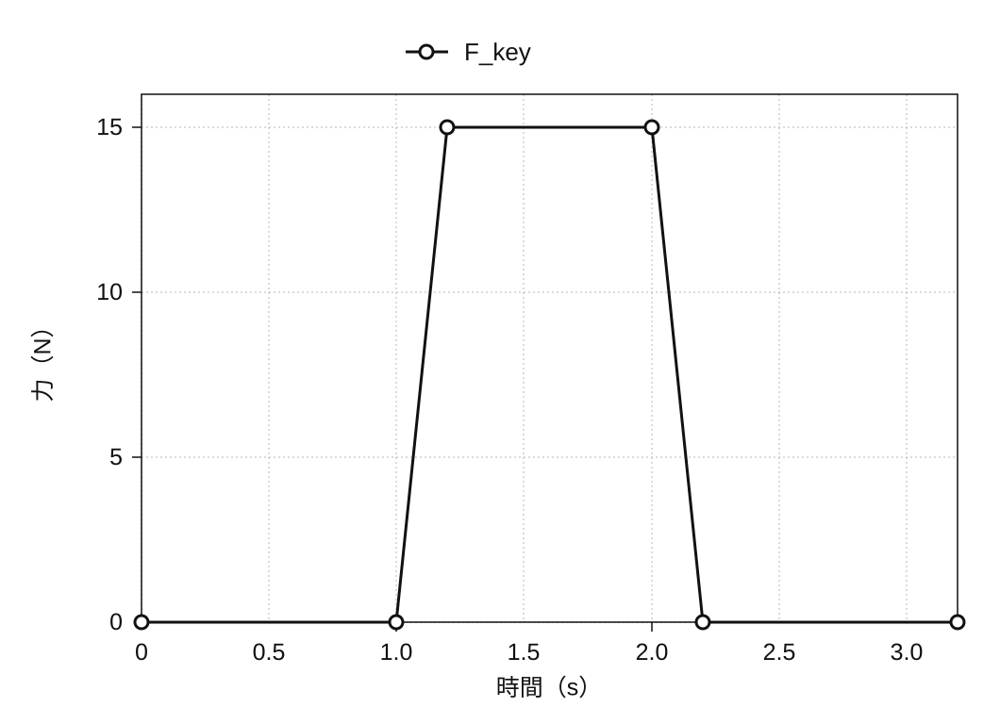
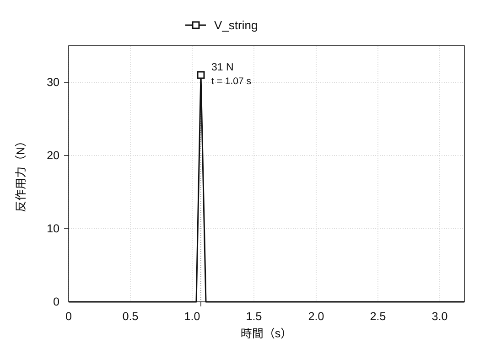

鋼琴擊弦機的運動分析
2020年1月
概述
平台鋼琴的擊弦機是一套槓桿系統，將按鍵動作傳至琴槌，使琴槌抬起擊打琴弦，令其振動。本專案以 SolidWorks* 重建擊弦機的 3D 模型，並透過運動分析，探討琴鍵輸入如何轉化為琴槌速度與琴弦反作用力。
我們依參考圖片從零建立機構模型，再分別進行兩項分析：琴鍵向下速度與琴槌向上速度的關係，以及琴鍵施力與琴弦反作用力的關係。模擬結果與依模型尺寸、支點位置計算的理論值比較，以檢查模型如何傳遞運動與力量。
* SolidWorks 是 3D CAD 系統，包含零件結構分析與機構運動分析工具。


把擊弦機做成可供分析的3D模型
把一次觸鍵變成一次擊弦的機構
擊弦機是把琴鍵的向下運動轉換為琴槌向上運動的機構。按下琴鍵後，頂桿螺絲、連動桿、擊弦機頂桿、複振槓桿等隨之連動，琴槌被抬起並擊打琴弦。演奏者看到的只是一次觸鍵，而在其內部，多個零件分別繞著不同的支點轉動，在彼此接觸之中把運動傳遞下去。
3D 模型包含琴鍵、琴槌、頂桿、連動桿、複振槓桿、頂桿螺絲、制音器、制音槓桿與金屬線，以及支撐這些零件的框架。為了模擬動作，必須定義各零件的支點，以及與其他零件接觸的位置。
從剖面圖做出3D模型
各零件以擊弦機的剖面圖為底圖，沿輪廓描繪，再從零建立 3D 模型。接著組裝零件，設定對應實際機構的固定連接與轉動接頭。這些關係讓幾何模型成為能在外力作用下運動的分析模型。


檢查組立模型的自由度
扣除固定的框架，可動零件共9個，若無拘束則合計具有54個自由度。把頂桿螺絲與金屬線固定於其他零件，可減少12個自由度；再以轉動接頭拘束其餘7個零件，又減少35個。因此，此CAD組合件的自由度為7，如下所示。
54 − 12 − 35 = 7
SolidWorks 的拘束診斷也顯示估計與實際自由度皆為 7，冗餘拘束為 0。這確認了本專案定義的零件與拘束依預期完成組立；它並不能用來判定所有實體鋼琴擊弦機的自由度。

琴鍵輸入的兩項分析
模型分成兩項獨立分析。分析一比較琴鍵速度與琴槌速度，分析二比較施加於琴鍵的力與琴弦反作用力。分開處理這兩組輸入與輸出關係，便能更容易以幾何速度比與槓桿平衡，分析複雜的連桿機構。
為了比較，機構被簡化為轉動構件並進行理論分析。理論值與模擬值若一致，可顯示模型的運動符合設定的尺寸與拘束條件。

分析一：從琴鍵速度到琴槌速度
在速度分析中，把複雜的擊弦機簡化為琴鍵、以連動桿為中心的中間機構、琴槌這三個在接觸中傳遞運動的剛體。把運動理解為依序從圖中的①傳到③，由眾多零件構成的機構便可當作三級轉動來計算。

同一剛體上的各點具有相同角速度。若以 r 表示至支點的距離、v 表示該點線速度，則 v = ωr。假設速度在每個接觸點都無損地傳至下一個剛體，將三級的「輸出半徑／輸入半徑」依序相乘，再乘以琴鍵速度，即可算出琴槌速度。
vhammer = (r1′ r2′ r3′ / r1 r2 r3) vkey

輸入條件與觀測結果
在SolidWorks Motion Analysis中，於琴鍵末端向下施加5 N，觀測琴鍵末端與琴槌的線速度。開始施力後不久出現的尖峰速度，琴鍵為1,027 mm/s，琴槌為4,284 mm/s。也就是說，在模擬中琴槌的速度約為琴鍵的4.17倍。

| 物理量與求取方法 | 速度 |
|---|---|
| 琴鍵（模擬） | 1,027 mm/s |
| 琴槌（理論計算） | 4,614 mm/s |
| 琴槌（模擬） | 4,284 mm/s |
與理論值的比較
自模型上量得的半徑為r1 = 200 mm、r1′ = 88 mm、r2 = 53 mm、r2′ = 78 mm、r3 = 16 mm、r3′ = 111 mm。代入公式之後，理想化的速度比約為4.49倍，據此可預測：對應1,027 mm/s的琴鍵速度，琴槌速度應為4,614 mm/s。

模擬得到的琴槌速度為 4,284 mm/s，比理論值低約 7%，但速度放大的程度相近。理論計算使用三個理想化剛體，模擬則表示個別零件。僅憑這個數值差異，無法確定造成落差的原因。
分析二：從琴鍵施力到琴弦反作用力
第二項分析在琴鍵表面向下施加15 N，觀測擊弦時出現於琴弦一側的反作用力。琴鍵一側的輸入Fkey自1.0秒起上升至15 N，而在擊弦的瞬間，琴弦一側的反作用力Vstring出現了最大31 N的尖峰。


為了比較，我們以琴鍵側與琴槌側的力臂長度，進行簡化的槓桿平衡計算。
Vstring = (15 × 195) / 94 = 31.1 N
輸入側力臂長 195 mm、琴弦側力臂長 94 mm，可得到 31.1 N 的靜態槓桿平衡比較值，比模擬峰值 31 N 高 0.1 N。這項靜態計算在什麼條件下能用來比較撞擊瞬間的反作用力峰值，仍待確認。

模擬結果與理論值的對照
兩項比較的結果
分析一的琴槌理論速度為 4,614 mm/s，模擬結果為 4,284 mm/s。分析二的靜態槓桿平衡比較值為 31.1 N，模擬峰值為 31 N。兩項比較中，3D 模型結果都與理論計算相近。
如何解讀差異
理論計算將擊弦機簡化為三個剛體，假設運動與力量透過接觸點無損地傳遞；模擬則表示個別零件。解讀結果時需要考慮這些表示方式的差異，但若要將剩餘落差歸因於能量損失或材料變形，仍須確認模擬設定。
結論
3D 模擬的琴槌速度與琴弦反作用力，均與理論比較值相近。在這些比較範圍內，依剖面圖建立的模型，再現了由設定的幾何與拘束條件所預期的運動與力量傳遞。
本專案串連了數個建模階段：解讀剖面圖、將零件之間的關係轉化為 CAD 拘束，以及依各項分析所需，將組立模型簡化為相應的力學模型。